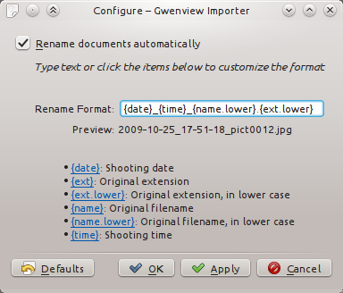

At the end of December my wife and I were invited with other parents to my daughter last dance lesson of the year.
Of course, I brought my camera with me. I shot a little bit more than 160 pictures from the one hour lesson (if that sounds like a crazy number, then you probably don't have kids...).
Some of them were shot in burst mode, where the camera continuously takes a few pictures per second, increasing the chances the wannabe photographer gets at least one decent picture (and partially explaining the embarrassing large number of shots...)
Importing, aka, the mistakeBack home, I imported the pictures with Gwenview importer and started to comb through them to get rid of the cruft.
Burst mode is fun, but Gwenview importer does not play nice with it: by default it renames imported pictures using the shot date found in the image EXIF information. I like this feature because I find it more expressive to have a picture named "2011-12-17_12-47-47.jpg" than "pict0234.jpg". It has one big drawback though: the precision of time information stored in EXIF is one second. When one shoots in burst mode, more than one picture per second is produced... In such a situation, Gwenview importer inserts a "_n" suffix just before the extension dot, where "n" starts at "1" and is increased until the importer can create a file name which does not exist. It gets even a bit nastier when you realize Gwenview importer does not necessarily import pictures in file order, meaning the "n" values do not necessarily match the order in which the pictures were taken... not good.
WorkaroundsI want to address this issue correctly in KDE SC 4.9, but meanwhile here are some workarounds.
If you haven't yet imported your burst-mode pictures, you can either disable image renaming altogether or change the "Rename Format" from "{date}_{time}.{ext.lower}" to "{date}_{time}_{name.lower}.{ext.lower}". This way imported images will still carry the original image name and will be properly ordered. File names will be a bit ugly, but at least you will be safe.
 Configuring Gwenview importer to append the original file name at the end of imported picturesIf you have already imported the pictures it gets a bit more tricky. I looked at the EXIF information my camera recorded and noticed pictures have a "Exif.Panasonic.SequenceNumber" tag (yes, that sounds vendor-specific :/). This tag is set to 0 for normal pictures, but starts at 1 and goes up for burst-mode pictures. I thus put together "pict-exif-rename", a quick Python script using pyexiv2 to rename all images, appending a suffix based on the sequence number if it is greater than 0.
I pushed "pict-exif-rename" as a github gist, maybe you will find it useful.
It would be interesting to hear from different camera owners about the presence of the "Exif.Panasonic.SequenceNumber" tag (or an equivalent). You can quickly check its presence by running "exiv2 -Pkv a_picture.jpg | grep SequenceNumber". All pictures taken with my camera (Panasonic DMC-FS16) have this tag, it is set to 0 for non burst-mode pictures.
{kind=link}
{kind=link}